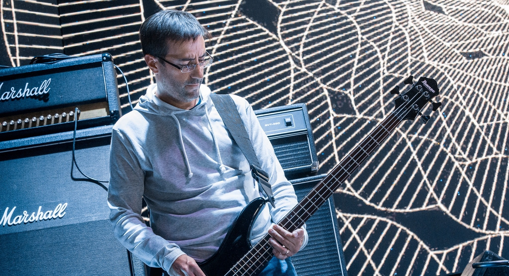
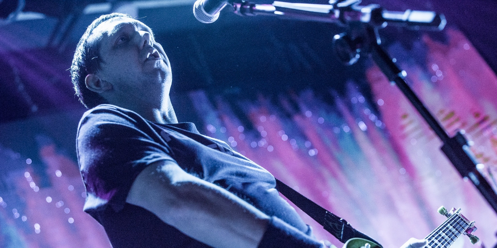
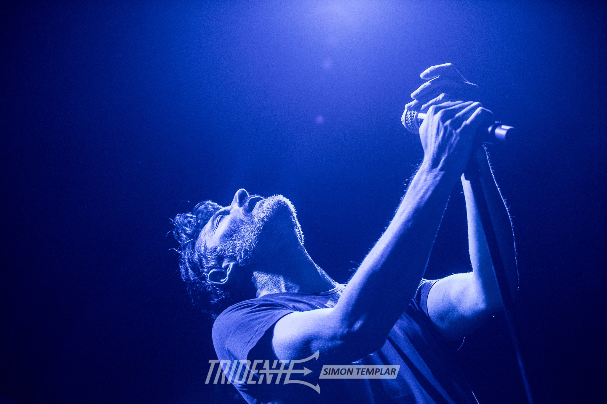
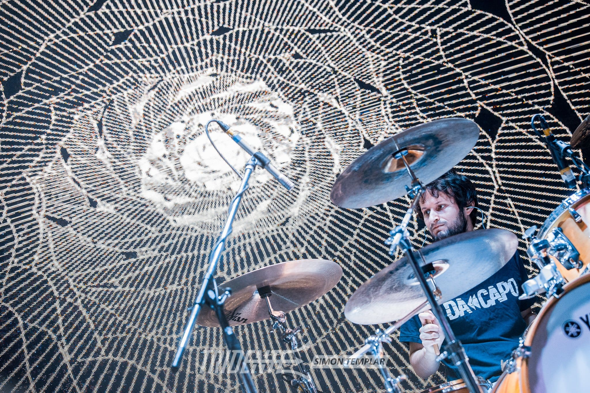

Fernando Bilbao
Bajo

Fernando Bobbio
Guitarra

Javier Marquez
Voz

Ezequiel Cerino
Guitarra

Nicolas Rassino
Bateria
Da Capo es una prometedora banda cordobesa tributo a Pearl Jam pero que además tiene repertorio propio. Está conformado por 5 integrantes: Fernando Bilbao en bajo, Ezequiel Cerino y Fernando Bobbio en guitarras, Nicolas Rassino en bateria y Javier Marquez en la voz. Con más de 10 años de trayectoria participan en festivales de bandas tributo y shows individuales que son un verdadero éxito. Este es el sitio web oficial de la banda, quédate atento a las novedades y nuevas fechas!